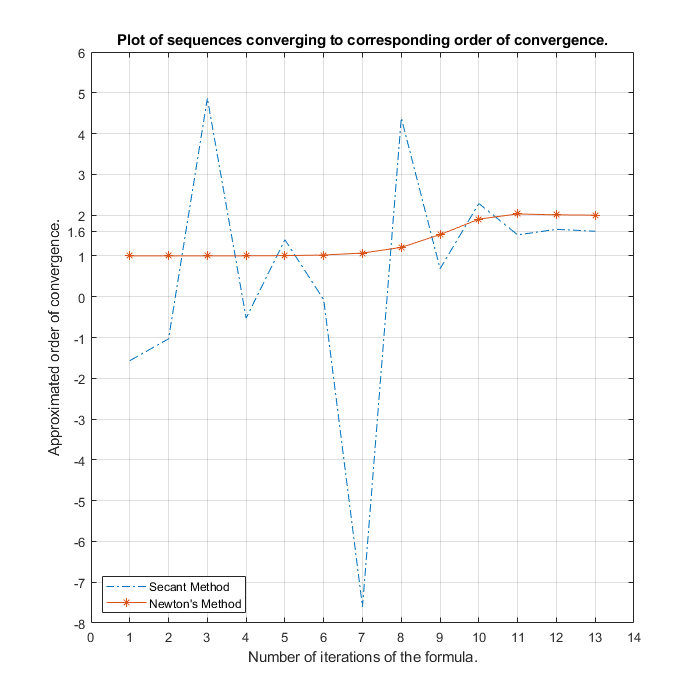
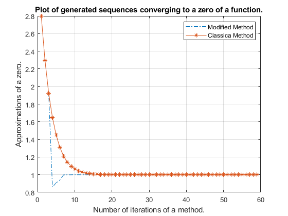

Assignment 2
Contents
- THE SECANT METHOD
- Approximates a zero of a function
- Makes use of optional inputs
- Gives additional outputs
- Accepts functions with parameters
- Condition(s) for the Secant Method to converge
- Determination of orders of convergence between the Newton's Method and the Secant Method
- Comparison of efficiency of the Secant and Newton's Method
- THE MODIFIED NEWTON'S METHOD
- Determines zero of a function
- Approximates order of a zero in each iteration
- Comparison of the Classical and Modified Newton's Method
- Plots comparison of the Newton's Classical and Modified Method
- REFERENCES
THE SECANT METHOD
clear all, close all, clc, format long;
Approximates a zero of a function
Secant approximates a zero of a function with the Secant Method until either the maximal number of iterations is reached or the tolerance is met. Let tolerance be the maximal difference of the last two iterates.
% I choose F and inputs, such that the zero of F is obvious (-2) and % the Secant Method converges to the actual zero. f = @(x) x^3+x^2+4; zero = secant(f,3,5,100,1e-5)
zero = -1.999999998849046
Makes use of optional inputs
The default optional inputs are the maximal number of iterations 100 and the minimal tolerance 1e-5.
% The optional arguments are left blank.
f = @(x) x^3+x^2+4;
zero = secant(f,3,5)
zero = -1.999999998849046
Gives additional outputs
f = @(x) x^3+x^2+4; % gives a vector X, which contains root approximations obtained % in the iterations [~,x] = secant(f,3,5) % gives a real number RES, which is an evaluation of a function F % at the approximated ZERO (This should be almost zero in a good approx.) [~,~,res] = secant(f,3,5) % gives a natural number NITER, which is either the maximal number % of iterations, in case a tolerance has not been met, or the number % of iterations needed to meet the tolerance. [~,~,~,niter] = secant(f,3,5)
x =
3.000000000000000
2.298245614035088
1.489135868491112
0.841942499011744
0.027090912938306
-2.471126364041517
-1.085398039066055
-1.693710136404077
-2.340843333437499
-1.936510168475282
-1.987960107678151
-2.000493532709543
-1.999996267908170
-1.999999998849046
res =
9.207630213836637e-09
niter =
13
Accepts functions with parameters
An arbitrary number of parameters can be plugged into the function. For example, when P1 = 5 and P2 = 2, then a zero is approximated for a function with such parameters.
f = @(x,p1,p2) p1*x^3+x^2/p2+4; zero = secant(f,3,5,100,1e-5,5,2)
zero = -0.962876622758200
Condition(s) for the Secant Method to converge
For the Secant Method to converge, certain conditions need to be sufficed. The following sequence of zero approximations seems not to be converging.
% Only first 15 terms are shown for better readability.
f = @(x) (x-1)^2*(x-2)^2;
[~,x] = secant(f,0.8,1.2,15,1e-5)
The Secant Method stopped without achieving the desired tolerance because the maximum number of iterations was reached. x = 0.800000000000000 1.520000000000000 -8.023529411764633 1.520072678720178 1.520145356297737 4.623140107805011 1.518003766465852 1.515859294394197 5.204019651298044 1.514590927129583 1.513321731079773 5.988715012882999 1.512616194606500 1.511910443505705 6.605694502765223 1.511433332857928
Determination of orders of convergence between the Newton's Method and the Secant Method
Under some conditions, there are typical orders of convergence for the Secant Method and for the Newton's Method. We are going to approximate and compare these orders of convergence. We can approximate an order of convergence with a formula . For each of the methods, the corresponding formula converges to the order of convergence as the number of iterates in that method increases.
% Calculates iterates of both, the Secant Method and the Newton's Method, % for a given a function F. f = @(x) x^3+x^2+4; [~,x] = secant(f,3,5,20,1e-10); [~,~,y] = newton(f,@(x) 3*x^2+2*x,-100,16,1e-10); % This is the formula$[1]$. formula = @(x1,x2,x3,x4) log(abs((x4 - x3) / (x3 - x2))) ... / log(abs((x3 - x2) / (x2 - x1))); % As i increases, the approximation of the order approaches the actual % order of convergence. We know this from the formula explanation$[1]$. for i = 4:length(x) orderSecant(i-3) = formula(x(i-3),x(i-2),x(i-1),x(i)); end for i = 4:length(y) orderNewton(i-3) = formula(y(i-3),y(i-2),y(i-1),y(i)); end % Makes a plot of the iterates approaching the order of convergence for % each method. figure(1); x_axis = 1:length(x)-3; y_axis = 1:length(y)-3; plot(x_axis,orderSecant,'-.',y_axis,orderNewton,'-*'); xlabel('Number of iterations of the formula.'); ylabel('Approximated order of convergence.'); title('Plot of sequences converging to corresponding order of convergence.'); xticks(0:14); yticks([-8:1, 1.6, 2:6]); legend({'Secant Method','Newton''s Method'},'Location','southwest') width=700; height=700; set(figure(1),'position',[0,0,width,height]) grid on; % According to the plot, the approximated orders of convergence are % 2 and 1.6 for the Newton's and Secant Method, respectively. % Actually, we know more exact values from previous calculations. orderOfConvergenceSecant = orderSecant(length(x)-3) orderOfConvergenceNewton = orderNewton(length(y)-3)
orderOfConvergenceSecant = 1.605190401054732 orderOfConvergenceNewton = 2.000166313389003

Comparison of efficiency of the Secant and Newton's Method
The previous observation is in agreement with the theoretical values for the orders of convergence of the Secant and Newton's Method. Under certain conditions, the Newton's Method should converge quadratically. The Secant Method should converge sublinearly with the order of convergence equal to the golden ratio (~1.618). Therefore, assuminng those certain conditions are met and the derivative of a function is known, it is more efficient to use the Newton's Method than the Secant Method because of faster convergence. Otherwise, when the derivative of a function is unknown or we observe higher order of convergence for the Secant than for the Newton's Method, we should opt for using the Secant Method.
THE MODIFIED NEWTON'S METHOD
clear all; close all; clc;
Determines zero of a function
For a given function F and its derivative DF, modified approximates a zero closest to the guess GUESS of the zero.
f = @(x) (x^2-1)^2*log(x);
df = @(x) 4*x*(x^2-1)*log(x)+(x^2-1)^2/x;
guess = 2.8;
% The actual zero is 1.
zero = modified(f,df,guess)
zero = 0.999999999984530
Approximates order of a zero in each iteration
The function modified approximates order of a zero in each iteration. The resulting output is a vector M consisting of the approximations in each iteration. If it is approximated in an iteration that the order of a zero is less than one, we assume the order of the zero to be one. The approximation of the order of the zero converges to the actual order of a zero as the number of iterations increases.
% The actual order of the zero is 3.
[~,~,~,~,M] = modified(f,df,guess)
M = 1.000000000000000 1.000000000000000 3.877295443373687 1.000000000000000 1.000000000000000 2.882460675255292 1.000000000000000 1.010131935881849 3.060483900480464 1.000000000000000 1.000000000000000 3.000013341120546 1.000000000000000
Comparison of the Classical and Modified Newton's Method
We can check how many iterations it takes for each method to achieve the demanded tolerance. We can observe that the number of iterates needed for the Modified Method to achieve the tolerance is much less than the number of iterates needed for the Classical Method to achieve the tolerance.
% Gets iterates converging to zero from both methods [~,x] = modified(f,df,guess) [~,~,y] = newton(f,df,guess,100,1e-10) % To achieve the tolerance 1e-10, we need the following number of iterates % of each method. neededIteratesModified = length(x) - 1 neededIteratesClassical = length(y) - 1
x =
2.800000000000000
2.296042854379792
1.922062171213966
0.859719078461928
0.907618295594678
0.938900038100993
0.998215668572150
0.998810622699801
0.999211178115680
1.000016009500112
1.000010673014314
1.000007115349204
0.999999999976796
0.999999999984530
y =
2.800000000000000
2.296042854379792
1.922062171213966
1.648071419601889
1.450280486716042
1.309686384991990
1.211205179782288
1.143097786366521
1.096479388165180
1.064819492326116
1.043441237921576
1.029064119445357
1.019422547991904
1.012969185923885
1.008655427733317
1.005774435120745
1.003851472288151
1.002568471234240
1.001712680344447
1.001141949762851
1.000761372261489
1.000507613704356
1.000338423448908
1.000225621994689
1.000150417490985
1.000100279584228
1.000066853614800
1.000044569324828
1.000029712993574
1.000019808711430
1.000013205829419
1.000008803895968
1.000005869268285
1.000003912847437
1.000002608565808
1.000001739044250
1.000001159363002
1.000000772908742
1.000000515272528
1.000000343515034
1.000000229010029
1.000000152673356
1.000000101782238
1.000000067854826
1.000000045236551
1.000000030157701
1.000000020105134
1.000000013403423
1.000000008935615
1.000000005957077
1.000000003971385
1.000000002647590
1.000000001765060
1.000000001176707
1.000000000784471
1.000000000522981
1.000000000348654
1.000000000232436
1.000000000154957
neededIteratesModified =
13
neededIteratesClassical =
58
Plots comparison of the Newton's Classical and Modified Method
We get a graph that shows iterates of both methods in one plot to see which of the methods converges to the zero faster. The method that converges faster has a bigger order of convergence than the other method. In this cae, when f has a zero with multiplicity 3, the Modified Newton's Method converges faster than the Newton's Method. Thus, the Modified Newton's Method has a higher order of convergence than the Newton's Method.
% We plot the calculated values from above x_axis = 1:length(x); y_axis = 1:length(y); plot(x_axis,x,'-.',y_axis,y,'-*'); xlabel('Number of iterations of a method.'); ylabel('Approximations of a zero.'); title('Plot of generated sequences converging to a zero of a function.'); legend({'Modified Method','Classica Method'},'Location','northeast') width=700; height=700; grid on;

REFERENCES
Senning, Jonathan R. "Computing and Estimating the Rate of Convergence" (PDF). gordon.edu. Retrieved 2020-08-07